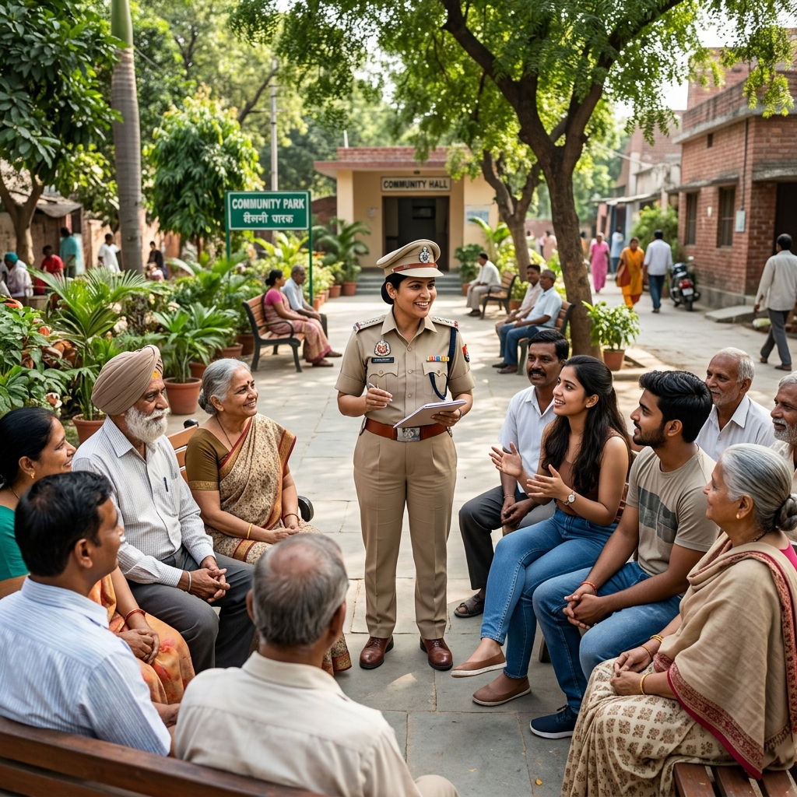
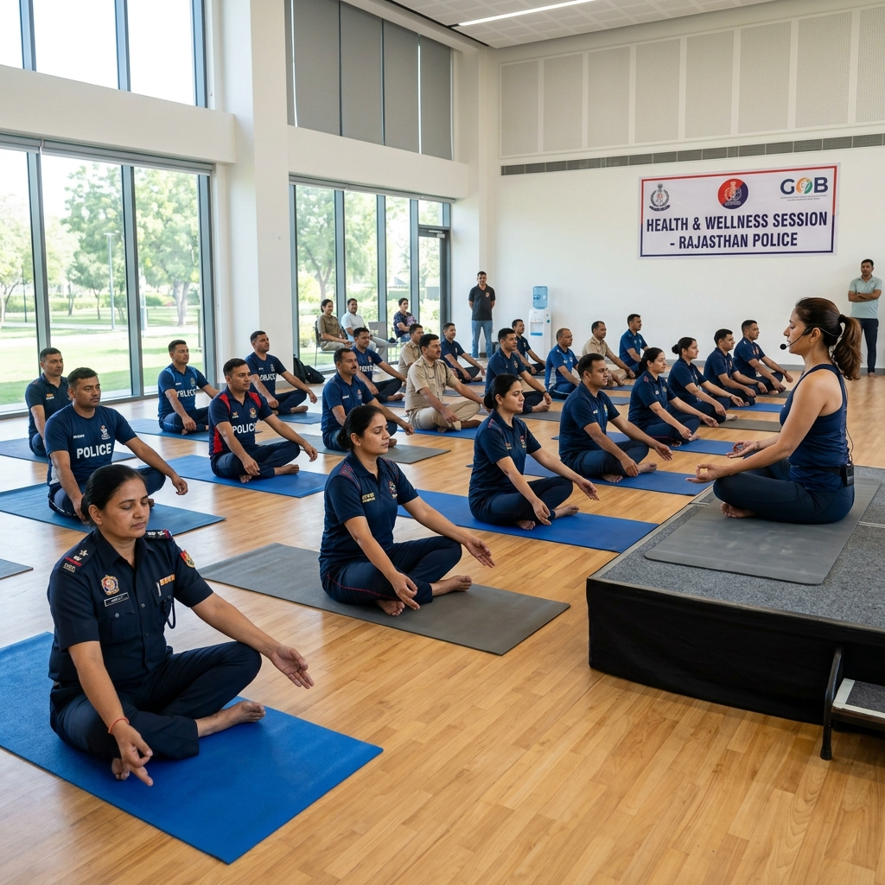

Official public information portal for Smt K.G.V. Saritha, IPS. Serving as Deputy Commissioner of Police (Administration) in Vijayawada, dedicated to structured administration, community safety, and progressive public outreach.

Information regarding the current operational duties and administrative placement.
Smt K.G.V. Saritha is an officer of the Indian Police Service (IPS). Currently, she serves as the Deputy Commissioner of Police (Administration) in Vijayawada. In this role, she oversees the structured functioning of police operations, resource allocation, and general administrative duties under the Commissionerate.
This portal serves as a source for departmental communication and public outreach appointments regarding her service.
Pioneering social reforms, women safety measures, and youth counseling programs to build a resilient and law-abiding community.

Designed to curb street harassment and build an environment of absolute safety. Active undercover units patrol public transport, educational campuses, and corporate hubs. Under her guidance, emergency response latency was cut down to under 5 minutes.
Request Partnership/Talk
A highly successful interactive camp organized across high schools and universities. DCP Saritha conducts direct dialog sessions with young minds, educating them on the psychological hazards of narcotics, cyber-hygiene, and paths to entering civil service.
Request School Session
Re-engineering police-citizen rapport. Initiated localized neighborhood committees where police representatives interact with community stakeholders weekly to resolve civilian issues, prevent petty crimes, and optimize security coverage.
Join Neighborhood Watch
Educating seniors, students, and home-makers on preventing online scams, identity theft, and fake transaction fraud. Includes offline modules, localized flyers, and social media webinars hosted directly by expert technical officers.
Download Cyber Materials
A cooperative outreach designed to assist runaways, homeless children, and victims of violence. Partnering with NGOs to offer safe shelter, psychological counseling, basic healthcare, and basic vocational training for long-term integration.
Partner/Donate Goods
Caring for our force. Under her leadership, periodic physical medical camps, mental health workshops, and yoga camps are organized to ensure the operational readiness and psychological health of active policing units.
View Welfare ReportsKey messages of integrity, digital responsibility, and civil leadership shared across prominent media channels and academic platforms.

A motivational address detailing the significance of active civic duty, integrity, and ethical choices for young engineering graduates.

Discussing the rise of artificial intelligence scams, digital financial fraud, and safety practices citizens must implement.

Official press statement outlining the quantitative success parameters: 40% reduction in local harassment incidents and 300+ successful cases.

Speaking to prospective female civil service candidates about administrative career challenges and structural changes in policing.

A radio interview focusing on social rehabilitation, parental vigilance, and local intelligence channels to root out local drug distribution.

Highlighting the induction of digital forensic analysts and dedicated desks to restore defrauded amounts within the 'Golden Hour'.
A comprehensive guide designed for field officers to implement friendly policing modules and standard operations for SHE Teams.
Download PDF (3.2 MB)Interactive slides and presentation decks used during university sessions to outline key protocols for student cybersecurity safety.
Read Presentation SlidesGlimpses of daily active policing duties, citizen counseling, prestigious ceremonies, and grassroots outreach.


Commendations and community feedback regarding public outreach and administrative initiatives.
For institutional invitations, school/college outreach sessions, SHE Teams support requests, or official communications, please utilize the approved channels listed below.
Write to the secretariat for scheduling lectures or panel requests.
dcp.saritha.ips@gmail.comDirect citizen connectivity forum for suggestions and community concerns.
Open WhatsApp ChatFill out the credentials and details below for official inquiries, coordination requests, or community feedback. This form dispatches via secure channels.
Category Tag